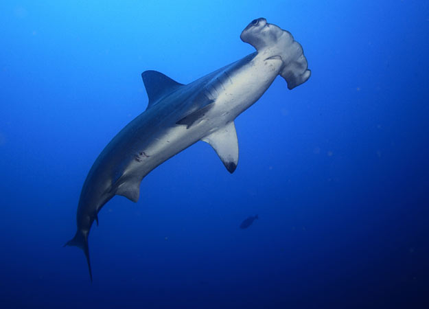
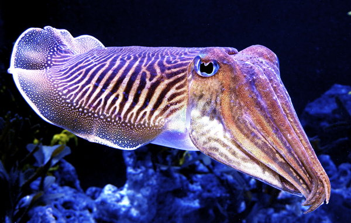
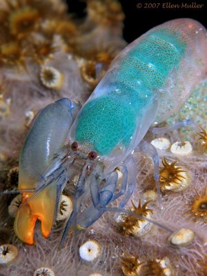

The Hammerhead Shark

Hammerhead sharks are cool because there are sharks, which is a kind of fish that is generally understood to be MAD AWESOME. Additionally, they have heads that are shaped like tubes, with eyes on far ends, making it way fun to draw pictures of them. They eat smaller fish, or something, I guess? I'm not a ichthyologist.
shark image
The Cuttlefish

The cuttlefish is the cuddliest of fish. It uses its many adorable tentacles to be so cuddly. Many sailors refer to it by its adorable nickname, "the Cuddle-fish". That doesn't stop anyone from eating them, however. Cuttlefish have no bones -just like a teddy bear does not- but instead GROWS A ROCK inside its body, which sounds like crazy talk but is totally true. The cuttlefish produces an 'ink' called Nero di Sepia, which the noble beast uses for self-defense; and which photographers and cooks use for making old-timey prints and pasta dishes, respectively.
cuttlefish image
The Pistol Shrimp

What if I told you there was a tiny, lobstery creature capable of closing its claw so fast it created a SONIC BOOM? Straight up sonic boom, kids. It uses this ability -let's be honest- this superpower to hunt its prey on the ocean floor. The pistol shrimp shoots a sonic boom at whatever it wants for lunch, stunning it long enough for our friend the shrimp to throw on a dinner jacket and bib, say grace, and dig in. These guys are so loud that they interfere with government, military, and scientific sonar readings. When these guys throw a party, you can literally hide a submarine behind them. Look it up.
shrimp image